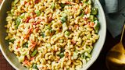

Home
Classic Macaroni Salad

Description
This recipe will be on how to make a macaroni salad with with celery, onion, green pepper, carrot, and pimentos.
A good dish to bring to a picnic or potluck.
Ingredients
- Macaroni: Macaroni pasta.
- Condiments: A combination of mayonnaise and yellow mustard.
- Sugar and vinegar: White vinegar is a good choice and you can add as much as white sugar as you prefer to sweeten
the dish.
- Seasonings: Salt and ground pepper will suffice.
- Vegetables: Celery, an onion and a bell pepper will be needed. Carrots and peppers are optional.
Steps
- Cook the macaroni in salted water.
- Mix mayonnaise, mustard, the seasonings, vinegar and sugar to taste.
- Stir in the macaroni and any remaining ingredients. Leave to chill in a refrigerator.